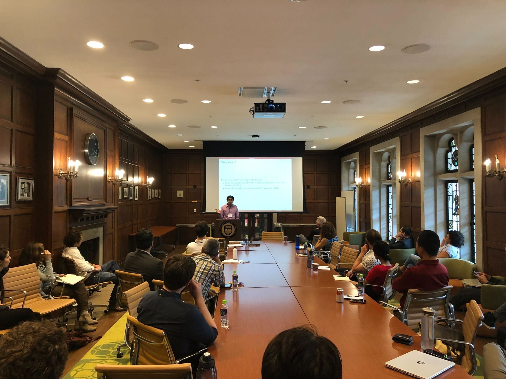

Researcher · Economist · Pre-Med
B.S. Mathematics & Economics | M.A. Mathematics (2027) | PhD Quantitative Economics (2028)
About Me

I'm a 4th-year undergraduate at the University of Alabama pursuing degrees in Mathematics and Economics on a pre-med track. My research bridges quantitative methods with real-world problems in health, the environment, and human behavior—with the conviction that rigorous evidence is the most powerful lever for improving lives.
I've had the privilege of conducting research at Harvard University and the University of Chicago, collaborating with faculty on randomized experiments, causal inference, and AI-driven health diagnostics. I'm equally comfortable writing economic theory and sitting in a clinical research setting.
After completing my undergraduate degrees, I'll pursue an M.A. in Mathematics (2027) and a PhD in Quantitative Economics (2028), building the technical foundations to ask—and answer—harder questions.
Research Interests
My work sits at the intersection of economics, statistics, and medicine—using rigorous methods to understand human behavior and its consequences for health and welfare.
Randomized experiments and field studies examining how individuals make decisions under uncertainty, including charitable giving and incentive design.
Causal estimation of how environmental exposures—pollution, climate—translate into measurable health and economic outcomes across populations.
Designing and evaluating expert AI systems for clinical decision support, disease prognosis, and diagnostics in resource-limited settings.
Empirical analysis of policy interventions affecting public health, with attention to heterogeneous treatment effects and equity implications.
Publications
Peer-reviewed publications and working papers across economics, medicine, and artificial intelligence.
Research Experience
Research positions at leading universities, collaborating with economists, physicians, and data scientists.
Collaborated on causal inference and experimental economics projects. Contributed to working papers on environmental health and charitable behavior under uncertainty with faculty mentors.
Worked with Reshmaan Hussam and collaborators on field experiments and behavioral interventions. Gained hands-on experience in randomized controlled trial design and analysis.
First independent research experience. Contributed to AI and health research leading to a published manuscript on expert AI systems for clinical applications.
Education
Building the mathematical and economic foundations for rigorous, impactful research.
Honors & Awards
Scholarships and fellowships awarded for academic excellence and research potential.
Contact
Interested in collaboration, research opportunities, or just want to say hello? I'd love to hear from you.
raeed.kabir@gmail.com